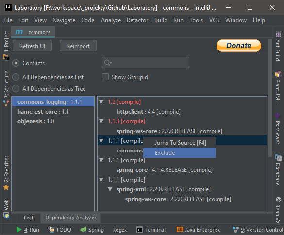

How Maven Works
本文是阅读了Maven官网的介绍和教程之后写的小结。
This page summarizes useful info from Maven official website.
POM
https://maven.apache.org/guides/introduction/introduction-to-the-pom.html
A Project Object Model or POM is the fundamental unit of work in Maven. It is an XML file that contains information about the project and configuration details used by Maven to build the project. It contains default values for most projects. Examples for this is the build directory, which is target; the source directory, which is src/main/java; the test source directory, which is src/test/java; and so on. When executing a task or goal, Maven looks for the POM in the current directory. It reads the POM, gets the needed configuration information, then executes the goal.
Super POM
The Super POM is Maven’s default POM. All POMs extend the Super POM unless explicitly set, meaning the configuration specified in the Super POM is inherited by the POMs you created for your projects.
You can see the Super POM for Maven 3.6.3 in Maven Core reference documentation.
Project Aggregation
Project Aggregation is similar to Project Inheritance. But instead of specifying the parent POM from the module, it specifies the modules from the parent POM. By doing so, the parent project now knows its modules, and if a Maven command is invoked against the parent project, that Maven command will then be executed to the parent’s modules as well. To do Project Aggregation, you must do the following:
Change the parent POMs packaging to the value “pom”.
Specify in the parent POM the directories of its modules (children POMs).
Project Interpolation and Variables
One of the practices that Maven encourages is don’t repeat yourself. However, there are circumstances where you will need to use the same value in several different locations. To assist in ensuring the value is only specified once, Maven allows you to use both your own and pre-defined variables in the POM.
Project Variables
For example, to access the project.version variable, you would reference it like so:
1 | <version>${project.version}</version> |
One factor to note is that these variables are processed after inheritance as outlined above. This means that if a parent project uses a variable, then its definition in the child, not the parent, will be the one eventually used.
Properties
You are also able to reference any properties defined in the project as a variable. Consider the following example:
1 | <properties> |
Dependency Mechanism
https://maven.apache.org/guides/introduction/introduction-to-dependency-mechanism.html
Transitive Dependencies
Maven avoids the need to discover and specify all the libraries.
You only needs to specify root dependencies, while all underlying dependencies will be included as transitive dependencies automatically.
Dependency Mediation
Maven defines several rules to determines what version of an artifact will be chosen when multiple versions are encountered as dependencies.
Rule1 - Nearest definition
Use versions of the closest dependency in project’s dependency tree.
You can always guarantee a version by declaring it explicitly in your project’s POM.
1 | D=1.0 since A=>E=>D1.0 is nearest. |
Rule2 - First declaration wins
If two dependency versions are at the same depth in the dependency tree, the first declaration wins.
1 | D=1.0 since A=>B=>D(1.0) declares first. |
Tip1 - Always specify the dependencies that source code uses directly
This is especially useful when you want to upgrade other dependencies which also has this dependency.
Dependency Scope
Dependency scope is used to limit the transitivity of a dependency and to determine when a dependency is included in a classpath.
| scope | description |
|---|---|
compile |
This is the default scope, used if none is specified. Compile dependencies are available in all classpaths of a project. Furthermore, those dependencies are propagated to dependent projects. |
provided |
This is much like compile, but indicates you expect the JDK or a container to provide the dependency at runtime. For example, when building a web application for the Java Enterprise Edition, you would set the dependency on the Servlet API and related Java EE APIs to scope provided because the web container provides those classes. A dependency with this scope is added to the classpath used for compilation and test, but not the runtime classpath. It is not transitive. |
runtime |
This scope indicates that the dependency is not required for compilation, but is for execution. Maven includes a dependency with this scope in the runtime and test classpaths, but not the compile classpath. |
test |
This scope indicates that the dependency is not required for normal use of the application, and is only available for the test compilation and execution phases. This scope is not transitive. Typically this scope is used for test libraries such as JUnit and Mockito. It is also used for non-test libraries such as Apache Commons IO if those libraries are used in unit tests (src/test/java) but not in the model code (src/main/java). |
system |
This scope is similar to provided except that you have to provide the JAR which contains it explicitly. The artifact is always available and is not looked up in a repository. |
import |
This scope is only supported on a dependency of type pom in the <dependencyManagement> section. It indicates the dependency is to be replaced with the effective list of dependencies in the specified POM’s <dependencyManagement> section. Since they are replaced, dependencies with a scope of import do not actually participate in limiting the transitivity of a dependency. |
Scopes for transitive dependency
Each of the scopes (except for import) affects transitive dependencies in different ways, as is demonstrated in the table below. If a dependency is set to the scope in the left column, a transitive dependency of that dependency with the scope across the top row results in a dependency in the main project with the scope listed at the intersection. If no scope is listed, it means the dependency is omitted.
| scope\scope | compile | test | provided | runtime |
|---|---|---|---|---|
| compile | compile | - | - | runtime |
| test | test | - | - | test |
| provided | provided | - | provided | provided |
| runtime | runtime | - | - | runtime |
Dependency Management
Authors can directly specify versions of artifacts when they are encountered in transitive dependencies or in dependencies where no version has been specified.
The <dependencyManagement> is often used in root pom for multi-module maven project.
1 | <project> |
Dependency Exclusion
Since Maven resolves dependencies transitively, it is possible for unwanted dependencies to be included in your project’s classpath.
For example
- a certain older jar may have security issues
- or be incompatible with the Java version you’re using
- dependency with similiar and exclusive functionality, like
junitandtestng
To address this, Maven allows you to exclude specific dependencies. Exclusions are set on a specific dependency in your POM, and are targeted at a specific groupId and artifactId. When you build your project, that artifact will not be added to your project’s classpath by way of the dependency in which the exclusion was declared.
How to use dependency exclusions
Add an <exclusions> element in the <dependency> element by which the problematic jar is included.
1 | <project> |
Maven Dependency Tools
mvn command
1 | mvn dependency:tree |
Maven Helper
Maven Helper is a useful IDEA plugin which can present maven dependency tree in UI.

Build Lifecycle
https://maven.apache.org/guides/introduction/introduction-to-the-lifecycle.html
Maven is based around the central concept of a build lifecycle.
There are three built-in build lifecycles: default, clean and site.
- The
defaultlifecycle handles your project deployment - The
cleanlifecycle handles project cleaning - While the
sitelifecycle handles the creation of your project’s web site.
Clean Lifecycle
| Phase | Description |
|---|---|
| pre-clean | execute processes needed prior to the actual project cleaning |
| clean | remove all files generated by the previous build |
| post-clean | execute processes needed to finalize the project cleaning |
Default LifeCycle
| Phase | Description |
|---|---|
| validate | validate the project is correct and all necessary information is available. |
| initialize | initialize build state, e.g. set properties or create directories. |
| generate-sources | generate any source code for inclusion in compilation. |
| process-sources | process the source code, for example to filter any values. |
| generate-resources | generate resources for inclusion in the package. |
| process-resources | copy and process the resources into the destination directory, ready for packaging. |
| compile | compile the source code of the project. |
| process-classes | post-process the generated files from compilation, for example to do bytecode enhancement on Java classes. |
| generate-test-sources | generate any test source code for inclusion in compilation. |
| process-test-sources | process the test source code, for example to filter any values. |
| generate-test-resources | create resources for testing. |
| process-test-resources | copy and process the resources into the test destination directory. |
| test-compile | compile the test source code into the test destination directory |
| process-test-classes | post-process the generated files from test compilation, for example to do bytecode enhancement on Java classes. |
| test | run tests using a suitable unit testing framework. These tests should not require the code be packaged or deployed. |
| prepare-package | perform any operations necessary to prepare a package before the actual packaging. This often results in an unpacked, processed version of the package. |
| package | take the compiled code and package it in its distributable format, such as a JAR. |
| pre-integration-test | perform actions required before integration tests are executed. This may involve things such as setting up the required environment. |
| integration-test | process and deploy the package if necessary into an environment where integration tests can be run. |
| post-integration-test | perform actions required after integration tests have been executed. This may including cleaning up the environment. |
| verify | run any checks to verify the package is valid and meets quality criteria. |
| install | install the package into the local repository, for use as a dependency in other projects locally. |
| deploy | done in an integration or release environment, copies the final package to the remote repository for sharing with other developers and projects. |
Site Lifecycle
| Phase | Description | Phase Description |
|---|---|---|
| pre-site | execute processes needed prior to the actual project site generation | |
| site | generate the project’s site documentation | |
| post-site | execute processes needed to finalize the site generation, and to prepare for site deployment | |
| site-deploy | deploy the generated site documentation to the specified web server |
mvn command line with lifecycle
mvn verifymeans to run each phases defined indefaultlifecycle untilverify.mvn clean deploymeans to first run each phases defined incleanlifecycle untilclean, then run each phases defined indefaultlifecycle untildeploy.
Build phase is made up of plugin goals
Each build phase can bind to 1+ plugin goals, which means you are running different plugin goals when you run build phase.
Maven has a lot of built-in defined plugin goals and they are binding to corresponding build phase.
As below command shows, build phase is finally converted as list of plugin goals running in sequence.
1 | mvn clean dependency:copy-dependencies package |
Repository Management
https://maven.apache.org/guides/introduction/introduction-to-repositories.html
A repository in Maven holds build artifacts and dependencies of varying types.
With Repositories you specify from which locations you want to download certain artifacts, such as dependencies and maven-plugins. Repositories can be declared inside a project, which means that if you have your own custom repositories, those sharing your project easily get the right settings out of the box. However, you may want to use an alternative mirror for a particular repository without changing the project files.
Best Practice - Use Mirrors for Repositories
Some reasons to use a mirror are:
- There is a synchronized mirror on the internet that is geographically closer and faster
- You want to replace a particular repository with your own internal repository which you have greater control over
- You want to run a repository manager to provide a local cache to a mirror and need to use its URL instead
To configure a mirror of a given repository, you provide it in your settings file (${user.home}/.m2/settings.xml), giving the new repository its own id and url, and specify the mirrorOf setting that is the ID of the repository you are using a mirror of. For example, the ID of the main Maven Central repository included by default is central, so to use the different mirror instance, you would configure the following:
1 | <settings> |
Profiles
https://maven.apache.org/guides/introduction/introduction-to-profiles.html
[!Tip]
Profiles are set of properties trigger by conditions.
There are different types of Profile in different places
- Per Project
- Defined in the POM itself (
pom.xml).
- Defined in the POM itself (
- Per User
- Defined in the Maven-settings (
%USER_HOME%/.m2/settings.xml).
- Defined in the Maven-settings (
- Global
- Defined in the global Maven-settings (
${maven.home}/conf/settings.xml).
- Defined in the global Maven-settings (
Activate Profile
A profile can be activated in several ways:
From the command line
1
2mvn groupId:artifactId:goal -P profile-1,profile-2,?profile-3
mvn groupId:artifactId:goal -P !profile-1,!profile-2,!?profile-3Through Maven settings
1
2
3
4
5
6
7<settings>
...
<activeProfiles>
<activeProfile>profile-1</activeProfile>
</activeProfiles>
...
</settings>Based on environment variables
OS settings
Present or missing files
Profile Order
All profile elements in a POM from active profiles overwrite the global elements with the same name of the POM or extend those in case of collections. In case multiple profiles are active in the same POM or external file, the ones which are defined later take precedence over the ones defined earlier (independent of their profile id and activation order).
Below POM leads to repository as profile-2-repo, profile-1-repo, global-repo.
1 | <project> |